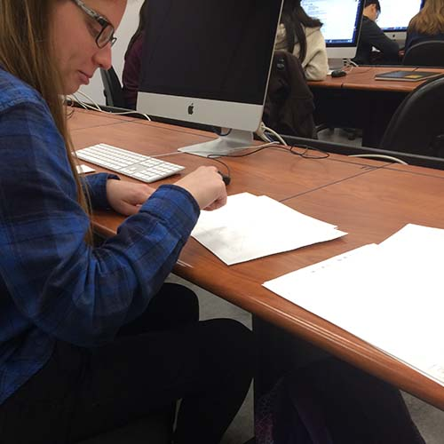

The paper prototype user testing gave me a really good idea of how to set up and fill out my web app. First, it made it clear how the navigation should work. I found out that having a home and back option on each page will give the user more control and easier access to the website. Second, many holes in my plan came to light. I realized that in order to be thorough, I need to add alerts that make sure the user is navigating where they want to go, and give new navigation options once an action is complete. For example, when a user finishes saving a project, they should have the option to keep working on the project, or go directly to a different part of the site. Third, I learned that some external links might greatly benefit the project. Links to art tutorials might help round out the web app and give students a little more information to work with. It also might be helpful to include a short video on how to navigate and interact with the site.
